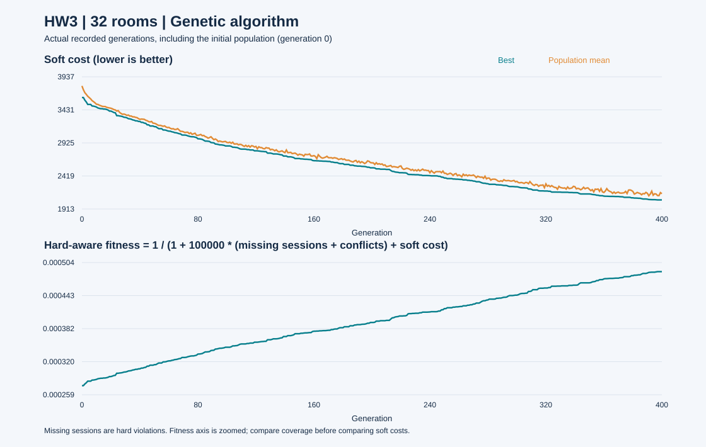

HW3 · Thời khóa biểu 32 phòng
Đủ 480 lớp / 960 buổi; không vi phạm ràng buộc cứng.
Tiết 1–3: sáng; tiết 4–6: chiều. Mã lớp L001–L480 là mã duy nhất; mỗi môn có 8 lớp.
| Tiết | Thứ Hai | Thứ Ba | Thứ Tư | Thứ Năm | Thứ Sáu |
|---|
Toàn bộ lịch CSV · Các lớp chưa xếp · Kết quả kiểm tra
